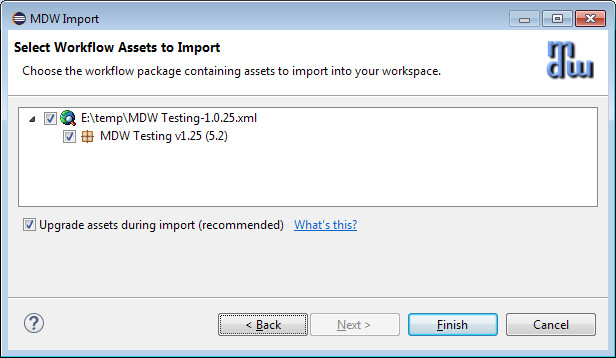

When importing an old-style package (identified by use of pre-5.5 activity implementors), MDW Designer gives you the option to automatically upgrade certain MDW base workflow elements during import:
These upgrades include:
It's highly recommended that you elect this option when importing. Otherwise you run the risk of polluting your VCS assets with old-style implementors, breaking subprocess synchronization, and other problems.